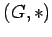
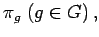
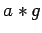
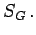
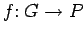
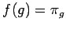

Inhalt Index DeskTop Bronstein

 Algebra und Diskrete Mathematik Klassische algebraische Strukturen Gruppen Abbildungen zwischen Gruppen
Algebra und Diskrete Mathematik Klassische algebraische Strukturen Gruppen Abbildungen zwischen Gruppen


Der Satz von CAYLEY beinhaltet, daß durch die Permutationsgruppen alle Gruppen strukturell beschrieben werden können:
Jede Gruppe ist zu einer Permutationsgruppe isomorph.
Eine zu  isomorphe Permutationsgruppe P ist die aus den Permutationen  die a auf  abbilden, bestehende Untergruppe der  Dabei ist ein zugehöriger Isomorphismus  durch  gegeben.